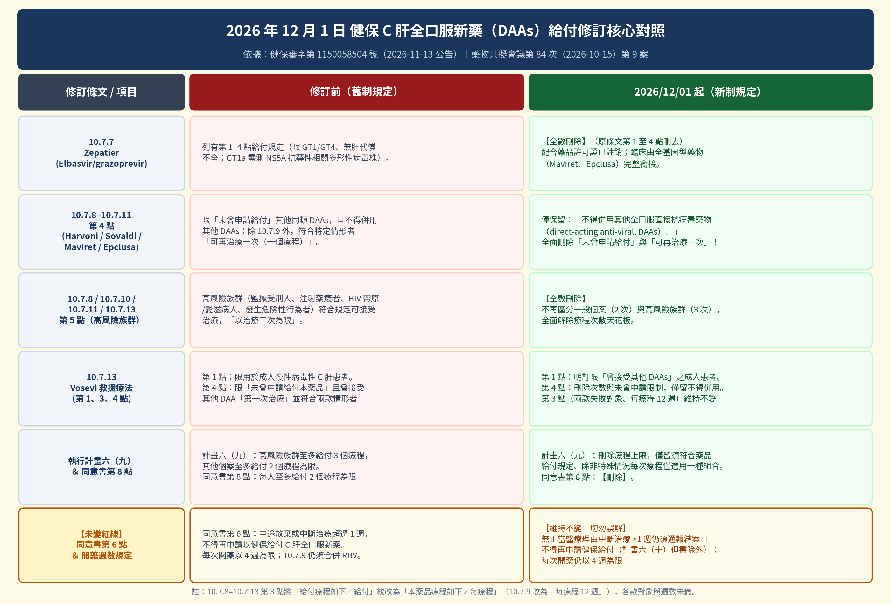
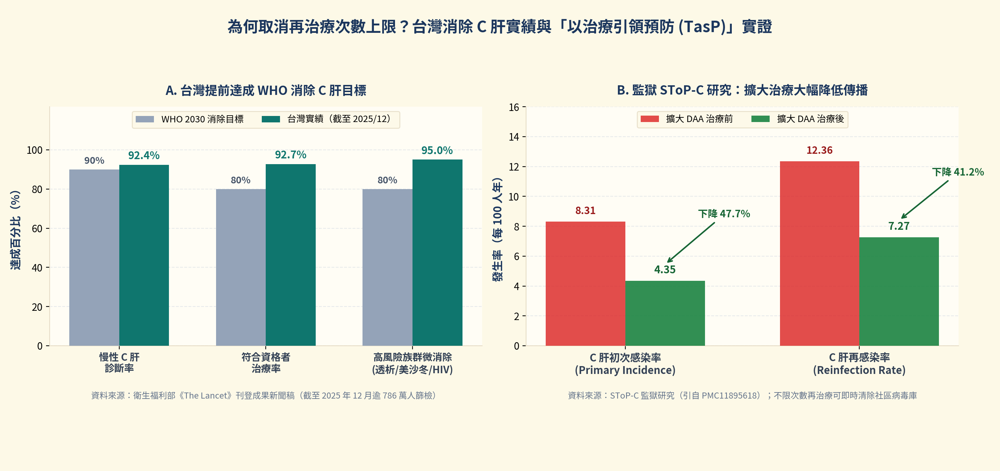
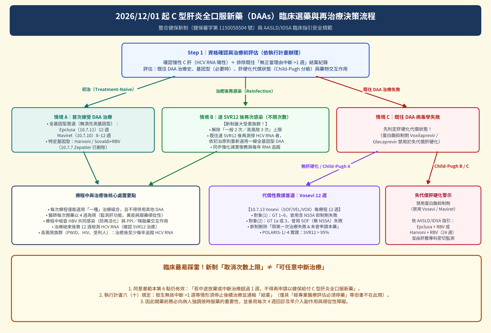
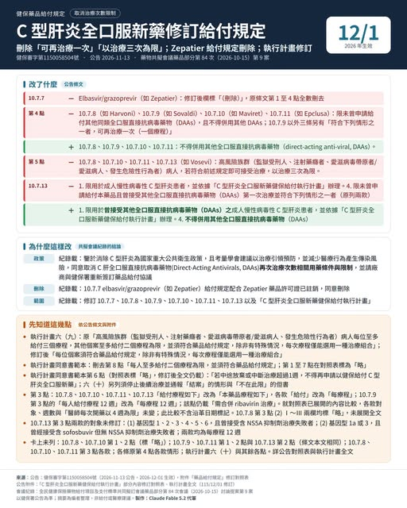

1. 新規重點總覽與關鍵數字
衛生福利部中央健康保險署於 2026 年 11 月 13 日（民國 115 年 11 月 13 日）發布健保審字第 1150058504 號公告（亦見醫聖診療系統轉載公告），並自 2026 年 12 月 1 日起正式生效。本次修訂係依循 2026 年 10 月 15 日「全民健康保險藥物給付項目及支付標準共同擬訂會議藥品部分第 84 次會議」第 9 案決議，核心在於徹底解除 C 肝全口服直接抗病毒藥物（DAAs）之再治療次數上限，以鞏固台灣消除 C 型肝炎之公共衛生防線。

2. 藥品給付規定逐條修訂對照
本次修訂涵蓋藥品給付規定第 10 節抗微生物劑中之 10.7.7、10.7.8、10.7.9、10.7.10、10.7.11、10.7.13 共六條規定（詳見第 6 節查核說明）。以下依條文項目拆解具體變動：
| 條文 / 藥品 | 修訂點次 | 原給付規定（舊制） | 2026/12/01 起（新制） |
|---|---|---|---|
| 10.7.7 Elbasvir / grazoprevir （如 Zepatier） |
全條（第 1–4 點） | 限 GT1 或 GT4、無肝功能代償不全成人；GT1a 須測 NS5A 抗藥性多形性（原藥典條文）。 | 刪除修訂後欄標「（刪除）」，原條文第 1 至 4 點全數刪去（配合藥品許可證已註銷）。 |
| 10.7.8（Harvoni） 10.7.10（Maviret） 10.7.11（Epclusa） 10.7.13（Vosevi） |
第 3 點（療程措辭） | 「給付療程如下」、各款載「給付 ○ 週」。 | 文字統整改為「本藥品療程如下」，各款「給付」改為「每療程」。已展開內容之對象、週數與「醫師每次開藥以 4 週為限」均未變。 註：10.7.8 第 3 點 (2) Ⅰ～Ⅲ 對照表兩欄均標「略」，未展開全文。 |
| 10.7.9 Sofosbuvir （如 Sovaldi） |
第 3、4 點 | 第 3 點：「每人給付療程 12 週」（需合併 ribavirin）。 第 4 點：「限未曾申請給付其他同類 DAAs，且不得併用其他 DAAs」。 |
文字統整第 3 點改為「每療程 12 週」，仍載「需合併 ribavirin 治療」。 放寬第 4 點改為「不得併用其他全口服直接抗病毒藥物（direct-acting anti-viral, DAAs）。」 |
| 10.7.8、10.7.10、 10.7.11 |
第 4 點（再治療上限） | 限未曾申請給付其他同類 DAAs，且不得併用其他 DAAs；另列「符合下列情形之一者，可再治療一次（一個療程）」。 | 解除限制全面刪去「未曾申請給付」與「可再治療一次」，僅保留：「不得併用其他全口服直接抗病毒藥物（direct-acting anti-viral, DAAs）。」 |
| 10.7.8、10.7.10、 10.7.11、10.7.13 |
第 5 點（高風險次數） | 「高風險族群（監獄受刑人、注射藥癮者、愛滋病毒帶原者/愛滋病人、發生危險性行為者）病人，若符合前述規定即可接受治療，以治療三次為限。」 | 全數刪除不再設三次上限；所有族群一致解除治療次數天花板。 |
| 10.7.13 Sofosbuvir / velpatasvir / voxilaprevir （如 Vosevi） |
第 1、3、4 點 | 第 1 點：限用於成人慢性病毒性 C 型肝炎患者，並依執行計畫辦理。 第 4 點：限「未曾申請給付本藥品」且曾接受其他 DAAs「第一次治療」並符合兩款情形之一者。 |
結構精簡第 1 點明訂：「限用於曾接受其他全口服直接抗病毒藥物（DAAs）之成人慢性病毒性 C 型肝炎患者，並依據『C 型肝炎全口服新藥健保給付執行計畫』辦理。」 第 4 點改為：「不得併用其他全口服直接抗病毒藥物（DAAs）」。 未變第 3 點兩款救援對象維持不變：(1) 基因型 1–6 且曾接受含 NS5A 抑制劑治療失敗者；(2) 基因型 1a 或 3 且曾接受含 sofosbuvir 但無 NS5A 抑制劑治療失敗者；均為每療程 12 週。 |
原卡未展開之其餘條文說明：10.7.8、10.7.10 第 1、2 點（對照表標「略」）；10.7.9、10.7.11 第 1、2 點與 10.7.13 第 2 點（條文本文相同）；10.7.8、10.7.10、10.7.11 第 3 點各款細項；各條原第 4 點各款情形；以及執行計畫六（十）與其餘各點，實際處方時均須回歸健保署公告附件（修訂對照表與執行計畫全文）為準。
3. 執行計畫、同意書與「未變紅線」
為與藥品給付規定同步，健保署同時修訂「C 型肝炎全口服新藥健保給付執行計畫」及其附件同意書範本：
- 執行計畫六（九）刪除療程總數上限：原條文規定「高風險族群（監獄受刑人、注射藥癮者、愛滋病毒帶原者/愛滋病人、發生危險性行為者）病人每位至多給付三個療程，其他個案至多給付二個療程為限，並須符合藥品給付規定，除非有特殊情況，每次療程僅能選用一種治療組合」。修訂後刪除前半段次數限制，僅保留：「每位個案須符合藥品給付規定，除非有特殊情況，每次療程僅能選用一種治療組合」。
- 執行計畫同意書範本刪除第 8 點：原第 8 點「每人至多給付二個療程為限，並須符合藥品給付規定」全數刪去；第 1 至 7 點於修訂對照表中標為「略」。
修訂對照表中第 1 至 7 點雖標示為「略」，但在修訂後的執行計畫全文中，同意書範本第 6 點仍然明載：
「若中途放棄或中斷治療超過 1 週，不得再申請以健保給付 C 型肝炎全口服新藥」
執行計畫六（十）的續用例外：中途放棄或中斷超過 1 週原則上須停止後續治療並通報結案。若經臨床評估可接續原療程剩餘用藥，且中斷未超過 4 週，可依條文例外續用。因其他因素經專業醫療評估必須停藥，也須停止治療並通報結案。
同意書第 6 點處理重新申請，六（十）的例外處理接續原療程。請對照附件 2 執行計畫第 5 頁及同意書第 9 頁。
4. 政策背景與「以治療引領預防 (TasP)」國際實證
依藥物共擬會議藥品部分第 84 次會議（2026-10-15）第 9 案紀錄，健保署通過本次修訂有三大核心考量：(1) 消除 C 型肝炎為國家重大公共衛生政策；(2) 採納醫學會建議「以治療引領預防（Treatment as Prevention, TasP）」並減少醫療行為產生之傳染風險（同時請藥商重新簽訂藥品給付協議）；(3) 10.7.7 Zepatier 許可證已註銷，順勢清理條文。
一、台灣已提前達標，解除次數上限是「守成與微消除」最後一哩路
- 根據衛生福利部《The Lancet》刊登成果新聞稿與消除 C 肝達標公告，台灣於 2025 年 8 月將公費篩檢放寬至 39–79 歲，截至 2025 年 12 月累計逾 786 萬人接受篩檢。
- 慢性 C 肝感染者診斷率達 92.4%、其中已診斷者的治療率達 92.7%，雙雙超越 WHO 2030 消除門檻（診斷率 ≥90%、治療率 ≥80%）；透析病人、美沙冬替代治療者及 HIV 感染者等高風險族群微消除治療率更達 95%。
二、國際實證支持：為何高風險族群不能設「治療次數天花板」？
- SToP-C 監獄前瞻研究：擴大 DAA 治療後，整體 HCV 發生率從 8.31 降至 4.35／百人年（IRR 0.52，95% CI 0.36–0.78）。初次感染率從 6.64 降至 2.85／百人年，再感染率從 12.36 降至 7.27／百人年。SToP-C 原始研究
- 冰島 TraP Hep C 全國計畫：整體研究世代的再感染率為 7.7／百人年，中位再感染時間為 232 天。TraP Hep C 原始研究
- 治癒後追蹤：持續有 HCV 再暴露風險者，例如仍有注射用藥者，應提供減害服務並至少每年檢測一次 HCV RNA。確認再感染後，依初治章節評估再治療。AASLD/IDSA HCV Guidance
展開原圖 2｜台灣消除 C 肝與 SToP-C 研究

5. 臨床選藥與再治療決策流程
先區分初治、確認 SVR12 後再感染，以及既往 DAA 治療失敗。選藥前確認肝硬化代償狀態與既往療程，並核對台灣個別藥品給付條件及藥品交互作用。
| 臨床情境 | 建議策略與健保對應條文 | 實證依據與安全警示 |
|---|---|---|
| 初治 / 治癒後再感染 （無肝硬化或代償性） |
優先選用全基因型 DAA：Epclusa（10.7.11，12 週）或 Maviret（10.7.10，8–12 週）；新制不再受限於既往治療次數。 | 兩種方案皆涵蓋 GT1–6。依 AASLD/IDSA 簡化治療流程，初治且有代償性肝硬化者，若選 sofosbuvir/velpatasvir，須先定基因型。GT3 需驗 NS5A Y93H，再依結果選藥。代償性肝硬化簡化治療指引 |
| 既往 DAA 治療失敗 （無肝硬化或 Child-Pugh A） |
既往含 sofosbuvir 療程失敗時，國際指引通常建議 Vosevi 12 週。台灣健保給付須符合 10.7.13 第 1–3 點，並查核其他 DAA 方案的失敗史。 | Vosevi 治療組在 POLARIS-1、POLARIS-4 的 SVR12 分別是 96%、98%。既往含 sofosbuvir 療程失敗且為 GT3 合併代償性肝硬化，無禁忌時依國際指引加用體重調整劑量的 ribavirin。POLARIS-1／4、AASLD/IDSA 再治療指引 |
| 失代償性肝硬化 （Child-Pugh B / C） |
絕對禁用所有含 NS3/4A 蛋白酶抑制劑之藥品（禁用 Vosevi、Maviret，亦同已刪除之 Zepatier）。 | 轉介肝膽專科。依 AASLD/IDSA，曾接受含 sofosbuvir 或 NS5A 抑制劑療程而失敗者，GT1–6 可評估 sofosbuvir/velpatasvir + ribavirin 24 週。Ledipasvir/sofosbuvir + ribavirin 24 週限既往含 sofosbuvir 療程失敗且為 GT1、4、5 或 6。療程仍須核對台灣給付條件。失代償性肝硬化指引 |
| 原 10.7.7 Zepatier 刪除後銜接 | 2026/12/01 起不再給付 10.7.7；GT1/GT4 個案依既往療程、肝功能及交互作用評估其他 DAA 選項。 | Zepatier（衛部藥輸字第 026972 號）原即禁用於 Child-Pugh B/C 且 GT1a 須先測 NS5A 多形性。 |
展開原圖 3｜C 肝 DAA 臨床選藥流程

6. 獨立證據查核與條文勘誤提醒
針對原始文字摘要與圖卡內容，我們逐一比對健保署官方公告、第 84 次共擬會議資料、衛福部統計數據及國際臨床指引，結果如下：
- 發文字號與日期完全正確：健保署確實於 115 年 11 月 13 日（2026-11-13）發布健保審字第 1150058504 號，並附有三份官方附件（附件 1 藥品給付規定修訂對照表、附件 2 執行計畫全文、附件 3 計畫內容修正對照）。
- 政策脈絡與 Zepatier 退場吻合：台灣提前達標 WHO 2030 消除 C 肝門檻、推動「以治療引領預防（TasP）」及 Zepatier（elbasvir/grazoprevir）原屬舊世代窄譜 DAA 之臨床事實均與公開官方及醫學文獻相符。
- 同意書第 6 點與接續療程：修訂後全文保留同意書第 6 點。中斷超過 1 週時，另依執行計畫六（十）評估能否接續剩餘療程。
比對健保署公告頁面與醫聖診療系統轉載全文發現：公告事項一主文列舉修訂條文為 10.7.7、10.7.8、10.7.10、10.7.11、10.7.13，並未在公告主文標題中列出 10.7.9（Sofosbuvir，如 Sovaldi）。
然而，依原始筆記所引第 84 次共擬會議紀錄範圍及附件 1 修訂對照表，10.7.9 第 3 點（「每人給付療程 12 週」改為「每療程 12 週」，仍需合併 ribavirin）與第 4 點（「不得併用其他 DAAs」）亦包含在修訂對照表內。建議臨床藥師與開方醫師若遇須使用 10.7.9 Sovaldi 之個案，務必直接下載健保署頁面之「附件 1. 藥品給付規定修訂對照表」PDF 核對最終生效條文，以杜絕申報爭議。
7. 原始整理圖卡留存與參考文獻
以下完整保留原始參考圖卡，供快速回顧與對照：

參考資料與查核來源
- 衛生福利部中央健康保險署（2026-11-13）。健保審字第 1150058504 號：公告修訂 C 型肝炎全口服新藥之給付規定及 C 型肝炎全口服新藥健保給付執行計畫（附件 1 給付規定修訂對照表、附件 2 執行計畫、附件 3 計畫內容修正對照）。
- 醫聖診療系統（2026-11-17 轉載）。健保審字第 1150058504 號公告全文與附件清單。
- 衛生福利部中央健康保險署。全民健康保險藥物給付項目及支付標準共同擬訂會議藥品部分第 84 次會議資料。
- 衛生福利部（2026）。臺灣消除 C 肝之路獲全球頂尖權威醫學期刊《The Lancet》刊登肯定；及消除 C 肝新里程碑 臺灣提前達成 WHO 目標。
- 光田綜合醫院西藥品查詢。Zepatier（Elbasvir/Grazoprevir，衛部藥輸字第 026972 號）原 10.7.7 給付規定與仿單資料。
- 衛生福利部桃園醫院肝膽腸胃科。C 型肝炎全口服新藥健保給付執行計畫衛教與結案規範。
- PMC Review (2023). Hepatitis C virus micro-elimination in people who inject drugs (SToP-C & TraP Hep C evidence).
- AASLD/IDSA (2023). HCV Guidance: Recommendations for Testing, Managing, and Treating Hepatitis C.
- University of Washington Hepatitis C Online (2026). Retreatment of Persons with Prior HCV Treatment Experience.
- Bourlière M, et al. (2017). Sofosbuvir, Velpatasvir, and Voxilaprevir for Previously Treated HCV Infection (POLARIS-1 & POLARIS-4); CADTH Clinical Review Report (NBK534025).